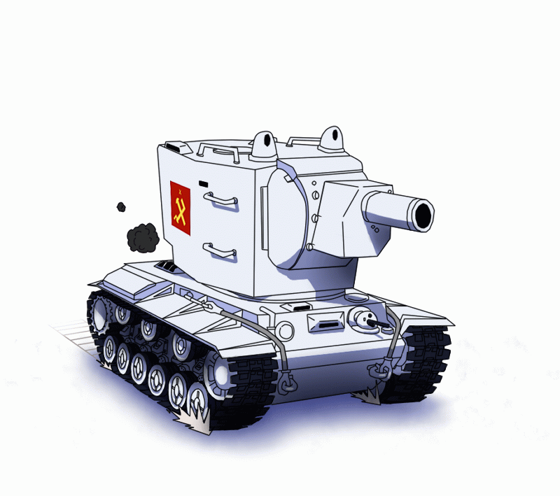
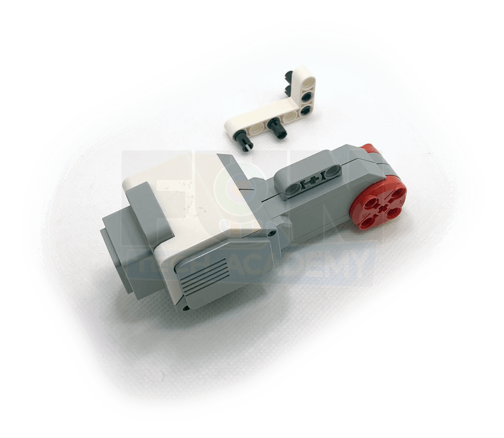
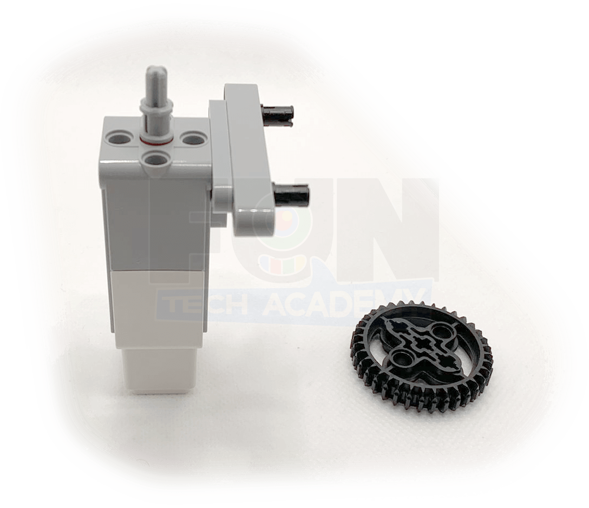

Hoy toca montar un vehículo de tipo tanque.

El coche tendrá la dirección en las ruedas delanteras mediante una barra de dirección y un motor que mueva
dicha barra. Tendrá también la tracción en las ruedas traseras mediante otro motor que haga girar estas.
El proyecto constará de dos partes. Por un lado montaremos la barra de dirección y le añadiremos
inicialmente un volante para poder moverla. Este volante lo sustituiremos por un motor posteriormente.
En la segunda parte trataremos de montar el resto del coche para poder utilizarlo después mediante un mando
a distancia.
A continuación, mostraremos un ejemplo de construcción de un coche con dirección base.
Empezaremos por montar la barra de la dirección.

Le añadimos el cableado y nos debería de quedar un montaje de este estilo.

En este caso no lo programaremos sino que utilizaremos la aplicación Comander para manejar nuestro coche.
Nuestro proyecto terminado y programado funcionaría de la siguiente forma.